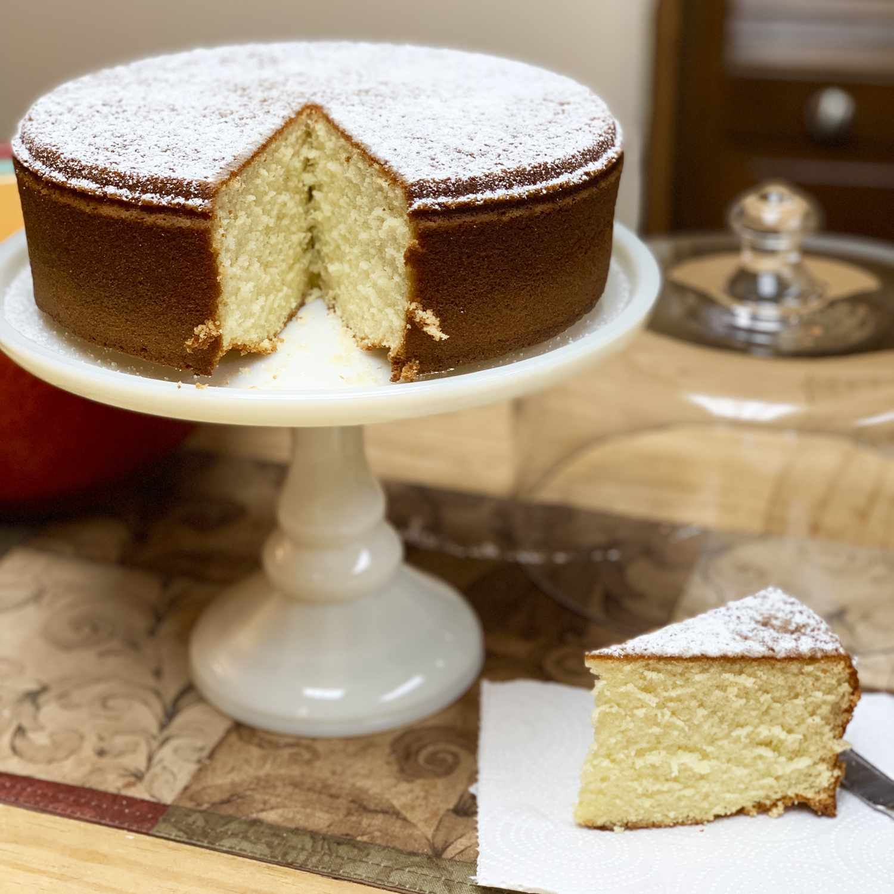

Vaselopita - Greek New Years Cake
Greek New Year's Day bread is customary. Served for breakfast as a coffee cake.
Additionally, the recipient of the quarter within has good fortune for a full year!

Ingredients
- 1 cup butter
- 2 cups white sugar
- 3 cups all-purpose flour
- 6 eggs
- 2 teaspoons baking powder
- 1 cup warm milk (110 degrees F/45 degrees C)
- ½ teaspoon baking soda
- 1 tablespoon fresh lemon juice
- ¼ cup blanched slivered almonds
- 2 tablespoons white sugar
Method of Cook
- Set oven to 350 degrees Fahrenheit (175 degrees C). Grease a 10 inch circular cake pan liberally.
-
Cream the butter and sugar until they are light and fluffy in a medium bowl. When the mixture is mealy, add the flour and stir.
One at a time, add the eggs, thoroughly combining after each addition. Add the milk and baking powder to the egg mixture and well stir.
The batter is then combined with the lemon juice and baking soda. Pour the mixture into the ready cake pan.
-
Bake in the preheated oven for 20 minutes. The cake should be taken out, the nuts and sugar added,
and then put back in the oven for an additional 20 to 30 minutes, or until it springs back when touched.
Make a small hole in the cake using a sharp knife, then insert a quarter. Try to use sugar to fill the hole.
Before turning cake onto a platter, let it cool for 10 minutes on a rack.
-
Serve warm cake. Family members receive slices, starting with the youngest.
Whoever receives the quarter in their piece is lucky for the entire year!
NUTRITION FACTS(PER SERVING)
447
CALORIES
20g
FAT
61g
CARBS
8g
PROTEIN